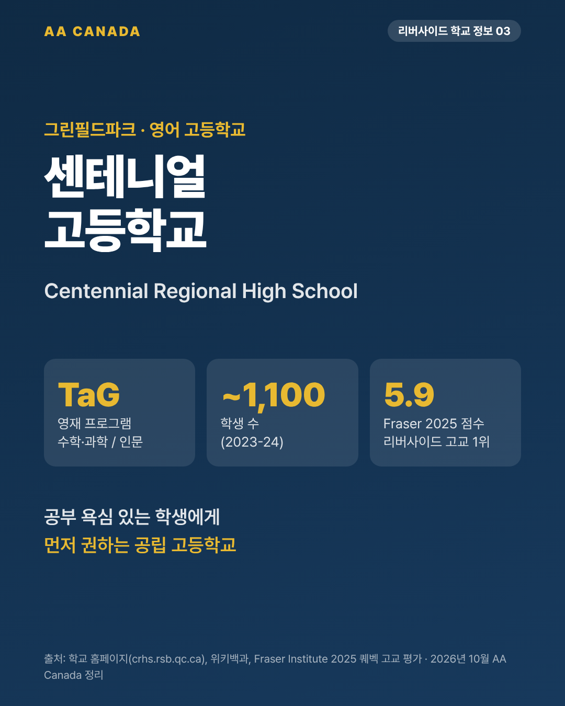

센테니얼 리저널 고등학교 (Centennial Regional High School)

기준일 2026-10-21 · AA Canada 정리
교육청 공통 정보는 리버사이드 교육청 공통 안내를 보세요.
한 줄 요약: 영재반(TaG)이 있는 학교. 리버사이드 4개 고등학교 중 주정부 시험 기반 평가 점수가 가장 높습니다.
한눈에 보기
| 항목 |
내용 |
| 주소 |
880 Hudson, Greenfield Park (Longueuil), QC J4V 1H1 |
| 연락처 |
450-656-6100 · https://www.crhs.rsb.qc.ca/ |
| 학년 |
Secondary 1~5 (중1~고2) |
| 학생 수 |
약 1,100명 (2023-24, 위키백과) |
| 수업 시간 |
9:40~16:05 (RSB 학교 페이지) |
| 시간표 |
9일 주기(9-day cycle) |
| 교장 |
Jennifer LeHuquet (임시 교장, 학교 연락처 페이지) |
| 역사 |
1972년 개교. 캐나다 연방 100주년(Centennial)에서 이름. 2011-12년 하우스 제도 도입. 학교색 금색·버건디 |
| 스포츠팀 |
Centennial Chargers |
아침 9:40 시작으로 리버사이드에서 가장 늦게 시작하는 학교입니다. 부모 출근 시간과 맞는지 미리 보세요.
프로그램
TaG (Talented and Gifted, 영재 프로그램)
두 갈래로 운영합니다.
- 수학·과학(Math & Science): 수학·과학 선행. 고등학교 재학 중 CEGEP(대학 예비과정) 수준 과목 수강 기회. CEGEP 이과 진학 준비용.
- 인문(Liberal Arts): 인문·사회 심화. 비판적 사고, 리더십, 창의성.
- 활동: 커먼웰스 에세이 대회, 시 대회, 과학경진대회(지역·주·국제), 수학경시, 리더십 캠프.
- TaG 학생은 불어 모국어 수준반(Français langue d'enseignement)도 들을 수 있습니다.
- 선발 기준과 지원 시기는 학교에 확인이 필요합니다.
일반과정 · 미들스쿨
- 일반과정(General Studies)
- 미들스쿨(Secondary 1~2): 담임 중심 수업, 반을 같은 선생님이 이어서 맡는 구조. 초등에서 고등으로 넘어가는 충격을 줄여 줍니다. 처음 온 유학생에게 유리한 구조입니다.
- 직업 준비 과정(PreWork / WOTP)
불어
- 제2외국어 불어 2단계: 기본(Regular), 심화(Enriched)
- 불어 이머전 출신 학생용 포스트이머전: 9일 주기 중 15교시(약 42%)를 불어로 수업(역사, 지리, 과학, 문학)
졸업 요건
- 54학점 이상, 그중 Secondary 5 학점 20점. Secondary 4·5 불어 통과 필수.
시설
- 4개로 나눌 수 있는 대형 체육관
- 리모델링한 웨이트룸·피트니스 센터, 스피닝·유도실
- 강당, 리모델링한 카페테리아
- 교육청 특수교육 학교 REACH의 분교 교실이 학교 안에 있습니다.
학교생활
- 운동부: 남녀 농구, 미식축구, 배구, 필드하키, 축구, 배드민턴, 골프, 육상, 크로스컨트리, 컬링, 하키
- 예술: 미술 동아리 "Color Me Happy", 음악 공연
학업 성적 지표
- Fraser Institute 2025 퀘벡 고교 평가(470개교): 10점 만점에 약 5.9점 (순위 약 230위권). 리버사이드 4개 고교 중 1위.
- 시험 성적 위주 지표이므로 참고용으로만 보세요.
AA Canada 코멘트: 이런 학생에게 추천
- 공부 욕심이 있는 이과·인문 학생. TaG가 맞는지 성적표로 먼저 상담합니다.
- 처음 캐나다에 오는 Secondary 1~2 학생. 미들스쿨 구조로 적응을 돕습니다.
- 브로사드·그린필드파크 생활권이라 한국 가족이 지내기 편한 지역입니다.
출처
- 학교 홈페이지 https://www.crhs.rsb.qc.ca/ (TaG, 학업지원, 시설, 졸업요건, 운동부, 연락처 페이지)
- 불어 이머전 페이지: http://www.crhs.rsb.qc.ca/french-immersion-program.html
- RSB 학교 페이지: https://www.rsb.qc.ca/school/centennial-regional-high-school/
- 위키백과: https://en.wikipedia.org/wiki/Centennial_Regional_High_School
- Fraser Institute 2025 보고서
- RSB 2026-27 브로슈어